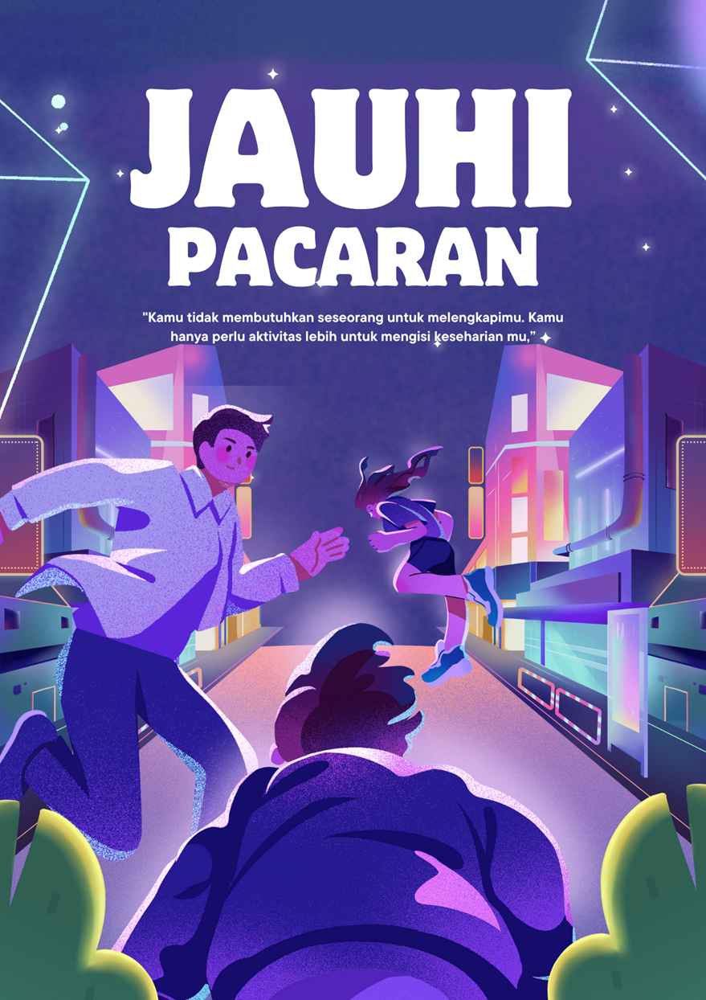

Hasil Observasi Mengenai Remaja (Pacaran)
By Siti Khanza Salsabila
Tujuan Observasi
Mendeskripsikan bentuk-bentuk perilaku pacaran yang sering terjadi di area sekolah.
Menganalisis frekuensi terjadinya perilaku pacaran di berbagai lokasi sekolah.
Mengidentifikasi faktor-faktor yang mempengaruhi perilaku pacaran siswa.
Metode Observasi
Melalui G-form
Disebar luaskan di lingkungan sekolah melalui via WhatsApp
Waktu Observasi
Saat waktu mata Pelajaran PiPAS
Hasil Observasi
Bentuk Perilaku
Berpegangan tangan, berpelukan, berbisik-bisik, saling menatap, dll.
Perilaku verbal (panggilan sayang atau gombalan).
Lokasi
Di mana saja perilaku pacaran terjadi (ruang kelas, kantin, koridor, Perpustakaan,Saat pulang sekolah,)?
Waktu
Kapan saja perilaku pacaran paling sering terjadi (jam istirahat, sebelum/sesudah Pelajaran, waktu jam pulang,)?
Pelaku
Siapa saja yang terlibat dalam perilaku pacaran (murid/siswa-siswi Sekolah)?
Pembahasan
Interpretasi Hasil
Apa arti dari hasil observasi yang Anda dapatkan?
Bagaimana hasil observasi ini berkaitan dengan teori atau penelitian sebelumnya?
Faktor-faktor yang Mempengaruhi
Apa saja faktor yang mungkin mempengaruhi perilaku pacaran siswa (misalnya, pengaruh teman sebaya, media, keluarga)?
Implikasi
Apa implikasi dari hasil observasi ini bagi sekolah, siswa, dan orang tua?
Dampak Berpacaran
Dampak Positif Berpacaran
Perkembangan Emosional: Berpacaran dapat membantu remaja belajar mengelola emosi, seperti cinta, kecemburuan, dan kekecewaan. Mereka juga belajar cara berkomunikasi dengan lebih efektif dan membangun empati.
Contoh: Seorang remaja yang sebelumnya pemalu menjadi lebih percaya diri setelah menjalin hubungan.
Perluasan Jaringan Sosial: Berpacaran dapat memperluas lingkaran pertemanan dan memperkenalkan remaja pada berbagai perspektif baru.
Contoh: Seorang remaja berkenalan dengan teman-teman baru dari kalangan berbeda melalui pasangannya.
Pengembangan Diri: Dalam hubungan, remaja seringkali termotivasi untuk menjadi versi terbaik dari diri mereka sendiri.
Contoh: Seorang remaja yang menyukai musik mulai belajar bermain alat musik untuk mengesankan pasangannya.
Dampak Negatif Berpacaran
Penurunan Prestasi Akademik: Terlalu fokus pada hubungan asmara dapat mengalihkan perhatian dari belajar sehingga prestasi akademik menurun.
Contoh: Seorang siswa yang sebelumnya berprestasi mulai sering bolos sekolah dan nilai-nilainya menurun drastis.
Tekanan Emosional: Masalah dalam hubungan seperti perselisihan atau putus cinta dapat menyebabkan stres, kecemasan, bahkan depresi.
Contoh: Seorang remaja merasa sangat sedih dan kehilangan semangat setelah putus dengan pacarnya.
Perilaku Berisiko: Beberapa remaja yang berpacaran mungkin terdorong untuk melakukan perilaku berisiko seperti seks bebas, penggunaan narkoba, atau tindakan kekerasan.
Pengaruh Negatif dari Pasangan: Jika pasangan memiliki pengaruh buruk, remaja dapat terpengaruh untuk melakukan hal-hal yang negatif.
Contoh: Seorang remaja mulai merokok setelah pacarnya mengajaknya.
Kesimpulan
"Hasil observasi menunjukkan bahwa sebagian besar siswa yang berpacaran mengalami penurunan prestasi belajar, terutama pada mata pelajaran yang membutuhkan konsentrasi tinggi. Hal ini ditunjukkan oleh penurunan nilai rata-rata sebesar [persentase] dibandingkan dengan sebelum menjalin hubungan."